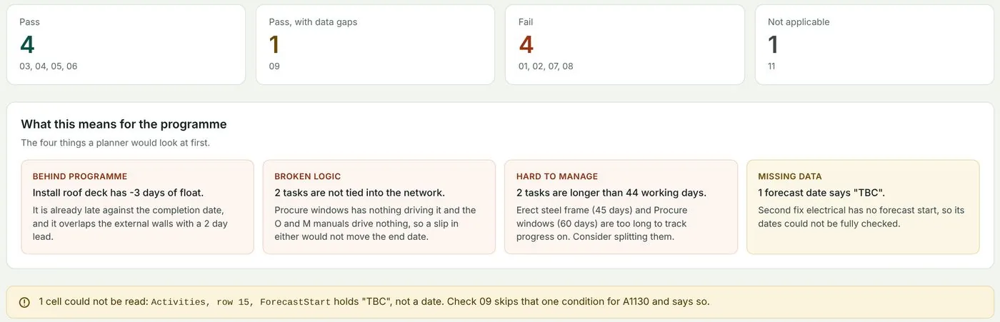
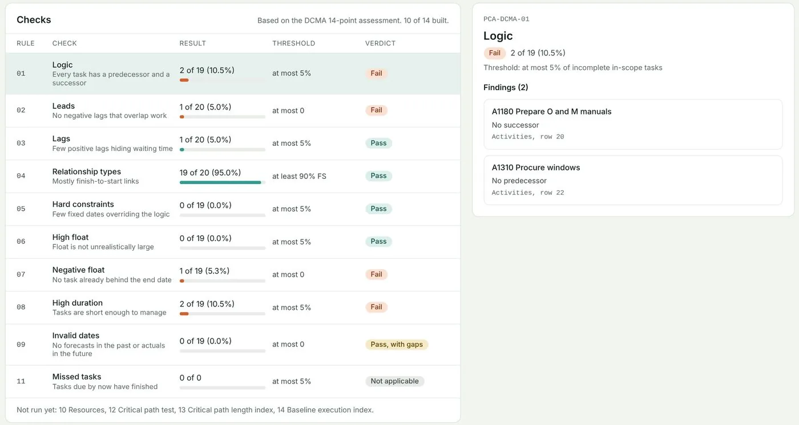
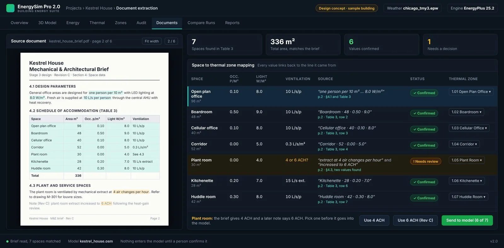

My own software tools, business case studies and university engineering work. Pick a theme, then open a project for the full case study.
How I build with AI
I use AI openly, and nothing it produces is trusted until it has been checked. This is the method behind both of my software tools.
DefineWrite the requirement and the pass or fail criteria first
Calculate by handWork out the expected results before any code exists
Build with AIAI coding tools write code to that specification
TestEvery change must pass the automated tests
ApproveAI output inside the tools stays a draft until a person confirms it
Writing the code
AI used
AI coding tools, working to my requirements. I set what counts as correct, and the code has to pass those tests.
Schedule checks
No AI
Plain arithmetic in Python, so the same schedule always gives the same answer.
Register drafts
AI used
The schedule tool can draft risk, issue and assumption entries with a large language model. Each draft must quote its source word for word, which the code checks, and a named person signs it off.
Reading design documents
AI used
EnergySim Pro uses a large language model to pull values out of PDF briefs. A person confirms each value before it enters the model.
Energy results
No AI
EnergyPlus does the physics. No number on the dashboard comes from a language model.
About me
I am based in Manchester and work as a Property Coordinator at Simtrava, where I track maintenance spend, compliance records and contractors across stores. Before that I led about 25 agents in airport ramp and cargo operations at DNATA.
Outside work I build small software tools that cut manual work for people I know in different industries, so they can spend their time on the work itself. I also walk in the Peak District once or twice a month, often along the Snake Path.
Working on now · October 2026
Fixing EnergySim Pro's heating defaults before comparing it against real IES VE projects, and preparing the schedule checker for a trial on real project data.
Experience
Property Coordinator
Simtrava · 2025 to now
Monitor maintenance spending against budget, check compliance records and coordinate contractors across sites.
Junior Business Manager
DNATA
Led about 25 agents in airport ramp and cargo operations against service targets, using root-cause analysis to find and clear bottlenecks.
Co-founder
Platinum Events
Co-founded a non-profit that ran more than 10 events across universities, managing budgets and safety, and raised over £5,000 for charity.
Aerodynamics team member
Salford Racing
Used CFD and wind tunnel testing to check whether design changes made a measurable difference.
Education
MSc Project Management
University of Liverpool · 2025
Dissertation on strategy and finance in a business simulation.
BEng Aeronautical Engineering
University of Salford
Final year project in CFD analysis of aerofoil and UAV aerodynamics.
A local tool that checks a project schedule the same way every time and shows the evidence behind each finding.
Type
Own software tool
When
2026
Tools
Python, SQLite, Streamlit, AI-assisted development
Schedule checker · Results summary

Results summary. The tool turns the checks into the four things a planner would look at first, and flags a date it could not read.
01The problem
Planners check schedules by hand, and two people can reach different answers on the same file. Missing logic or a hard constraint is easy to miss in a long programme.
02What I did
Built a local tool that runs ten checks adapted from the DCMA 14-point assessment, such as missing logic, negative float and hard constraints.
Worked out the expected result for each check by hand first, then tested the tool against those answers.
Made every finding list the activity IDs behind it, so a planner can see exactly why it was flagged.
03How AI was used
Building it: AI coding tools wrote most of the code. I wrote the requirements and the hand-calculated expected results, and the code had to pass those tests.
The checks: no AI. They are plain arithmetic, so the same schedule always gives the same result.
Register drafts: the tool can draft risk, issue and assumption entries from project documents with a large language model. Each draft must quote its source word for word, which the code checks, and a named person signs it off before it is recorded.
04Result
10Checks adapted from the DCMA 14-point assessment
2,100+Automated tests on synthetic schedules
Schedule checker · Check results

Each check shows its result against the threshold. Opening one lists the exact activities and spreadsheet rows behind the finding.
The next step is a trial on real project data.
05Skills used
Schedule analysis (DCMA 14-point)
Project controls
Python and SQLite
Streamlit
Test design
AI-assisted development
Checking AI output
Screens from the interface design, filled with results from a real run of the tool on a synthetic sample schedule.
The results dashboard on a sample seven-zone office (Kestrel House, Chicago weather). Energy figures sit next to the comfort and audit checks, so a result is never shown without them.
01The problem
Sustainability engineers spend hours copying room schedules, U-values and system specifications out of PDF design documents into simulation software such as IES VE. It is slow, and a typing error can carry through to the final energy figures.
02What I did
ReadDesign PDFs: schedules, specifications, room data
BuildZones, constructions and systems in OpenStudio
RunEnergyPlus simulation, with checks before it starts
ReportEnergy results, each shown with its comfort checks
ValidateNext: compare against real IES VE projects
The tool pulls tables and specifications out of the documents, and each value is checked by a person before it is used.
Every energy figure appears next to its guard checks (unmet heating and cooling hours, lowest unoccupied temperature), so a result that looks good but leaves people cold cannot slip through.
EnergySim Pro · Document review (design concept)

Design concept for the document review screen, with sample data. A person confirms each value before it enters the model. Where the brief contradicts itself, as with the plant room ventilation here, the tool asks rather than guesses.
03How AI was used
Building it: written with AI coding tools, in stages, each with pass or fail criteria before the next starts.
Reading documents: extraction uses a large language model. A person confirms each value before it goes into the model.
The numbers: EnergyPlus does the energy calculation, so no result on the dashboard comes from AI.
Measuring it: I am scoring the extraction on a set of test documents, comparing a hybrid mode with an AI-only mode. Until those results are in, I make no claim about its accuracy.
04Result
161Automated tests passing
7 zonesSimulated benchmark office
Built in stages: each stage has pass or fail criteria before the next starts.
Catching bad results: an early default setup gave an unrealistic energy use of about 470 kWh/m² a year on a test building. I traced it to the ventilation and heating defaults, and the fix is being tested.
05Skills used
Building energy modelling
EnergyPlus and OpenStudio
Python
Data validation
Staged testing
LLM integration
AI-assisted development
Not yet validated against IES VE. The next stage runs real projects, with Manchester weather data, through both tools and compares the results.
Greggs and Debenhams: why one adapted and the other could not
Two UK high-street names faced the same shift in how people shop. I compared them on the same measures to find out why their results split.
Type
Business case study
When
2026
Tools
Excel, published annual results
GreggsDebenhamsRevenue index, 2015 = 100
Hover or tap the chart to read each year.
01The problem
Greggs kept its menu and changed where and how people buy it. Debenhams had a large store estate with fixed costs and could not change fast enough. I wanted to see whether the numbers backed that story.
02What I did
Built an Excel model from published results to compare both on revenue, margin and profit.
Split Greggs' sales growth into existing shops and new shops.
Traced how Debenhams' fixed costs turned a small sales dip into a large fall in profit.
03Result
+23%Greggs revenue, 2015 to 2018
−2%Debenhams revenue, same years
8.7% vs 1.9%Operating margin in 2018
−71%Debenhams underlying profit, FY2015 to FY2018
Is Greggs' growth real? Like-for-like growth fell from 4.2% (2016) to 2.4% (2025), so more growth now comes from new openings.
Why flat sales hurt Debenhams: with rent and staff costs fixed, a 2% sales dip became a 71% fall in underlying profit.
Lesson for clients: watch margins and fixed costs, not only sales. Debenhams' gross margin fell 160 basis points months before its record loss.
04Skills used
Financial statement analysis
Excel modelling
Like-for-like analysis
Cost structure
Sources: Greggs results announcements and FashionUnited reports of Debenhams results. Financial year-ends differ, and Debenhams' 2017 operating profit is derived from its reported 59.6% fall.
Business case studyUniversity report, updated 2026
Porsche: the pricing power behind its margins, tested against 2025
My university report explained how Porsche earned far more per car than larger premium brands. In 2026 I tested it against Porsche's latest results.
Type
Business case study
When
University report, updated 2026
Methods
Pricing, positioning, market analysis
01The problem
How did a small carmaker make several times more profit per car than Audi, BMW and Mercedes-Benz, and does that logic still hold?
02What I did
The original report looked at how Porsche positioned the 911 in 2012 and 2013. It kept prices high and protected exclusivity: no model was to sell below about €50,000, and the average Porsche sold for about €90,000.
Compared profit per car against the premium volume brands.
Mapped the 911 against its direct rivals: the Audi R8, BMW M6 and Nissan GT-R.
In 2026, checked every figure against a dated source, dropped the ones I could not verify, and added Porsche's 2024 and 2025 results.
03Result
Pricing: Porsche made about €16,600 per car, a margin of 18.4%, against about €3,500 for BMW and €3,800 for Audi.
Positioning: the 911 competed on handling and everyday use, and sold more than 26,000 units in 2012.
Brand: Porsche had the fastest-growing brand value of any carmaker in Interbrand's 2013 ranking, up 26%.
143k → 279kDeliveries, 2012 to 2025
14.1% → 1.1%Operating return on sales, 2024 to 2025
€3.9bnOne-off costs in 2025: strategy reset, batteries, US tariffs
51,583911s delivered in 2025, up on 2024
What the update shows: deliveries roughly doubled, but in 2025 revenue fell 9.5% and operating profit fell 93%, mainly from €3.9bn of one-off costs. The 911, the core of the original analysis, still grew. Porsche's own response is "value over volume", which is the pricing logic my report described.
04Skills used
Market and competitor analysis
Pricing strategy
Financial results analysis
Source checking
2012 figures: Porsche AG and Wirtschaftswoche (August 2013); brand values: Interbrand Best Global Brands 2013. 2024 and 2025 figures: Porsche AG annual results, March 2026. Profit per car is as reported by Wirtschaftswoche.
Running a simulated car maker: a costly mistake and the recovery
I ran Titan Holdings, a car maker, through a nine-round business simulation. One bad call in round 3 put it into overdraft, and the rest of the game was the recovery.
Type
MSc Project Management dissertation
When
2025
Where
University of Liverpool
Closing bank balance by round (£m)
Press play to step through each round.
01The problem
I made the company's decisions each round, and the dissertation judged each one against strategy theory and the competing teams.
02What I did
In round 3 I pushed production ahead of demand and was left with £1.75bn of unsold stock and an overdraft.
Over the next rounds I cut production back to demand and cleared the stock.
Repaid £1.7bn of loans and finished debt free.
03Result
−£319mOverdrawn after round 3
£2.5bnCash at the end, debt free
£88.55 → £1,407.85Share price, round 1 to round 9
What I learnt: check the demand assumption and watch cash and stock early. The warning signs (liquidity at zero, share price down a third) appeared before the loss did.
Boeing 777-200: payload, range and runway performance
An Excel performance model of the 777-200, revisited in 2026 to correct the range calculation.
Type
Aircraft performance study
Where
University of Salford
Tools
Excel
Payload (tonnes) against range (km), at maximum take-off weight
Hover or tap anywhere on the chart to read the payload at that range.
01The problem
How far can a 777-200 fly with a given payload, and how much runway does it need to take off and land?
02What I did
Built a model covering take-off and landing distances, the flight envelope and the payload-range trade-off.
In 2026 I rechecked the range calculation and corrected the cruise speed to Mach 0.84.
03Result
~4,800 kmRange with full 49.7 t payload
~12,500 kmRange with no payload
69 m/sStall speed at take-off weight (134 kt)
2×Landing distance on a wet runway without reversers, against dry with reversers
04Skills used
Aircraft performance
Excel modelling
Checking and correcting a model
Weights: 229.5 t maximum take-off, 201.9 t maximum landing, 190.5 t maximum zero fuel. Range uses a simplified Breguet estimate (lift-to-drag 16.8, fuel use 0.55 lb/lbf/hr, 5% reserve), so it is a first-order figure, not an airline planning number.